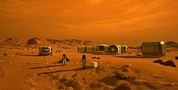

Місія людини на Марсi була предметом наукової фантастики з 1880-х років, а аерокосмічної техніки та наукових пропозицій з кінця 1940-х років. Плани включають як мінімум висадку на Марс для дослідження, а деякі розглядають можливість дослідження його супутників Фобос і Деймос. Довгострокові пропозиції включали відправку поселенців і початок тераформування планети.
Дослідження Марса
Дослідження Марса було метою національних космічних програм протягом десятиліть. Концептуальна робота щодо місій, які б залучали дослідників-людей, тривала з 1950-х років , при цьому заплановані місії, як правило, мають місце від 10 до 30 років з моменту їх складання. Список екіпажу Плани місії на Марс показують різні пропозиції місії, які були висунуті кількома організаціями та космічними агентствами в цій галузі дослідження космосу. Плани варіювалися від наукових експедицій, у яких невелика група (від двох до восьми астронавтів) відвідувала Марс на кілька тижнів або рік, до постійної присутності (наприклад, через дослідницькі станції, колонізацію чи іншу безперервну гуманізацію). Також було запропоновано віртуальні візити на Марс з використанням тактичних технологій
У 2010- х роках численні агентства США, Європи та Азії розробляли пропозиції щодо польотів людей на Марс. У художній літературі Марс є частою метою дослідження та поселення в книгах, графічних романах та фільмах.
Марсові човники
Є шатли, які були на Марсі
- Марс 3
- Вікінг 1 і Вікінг 2
- Mars Pathfinder і його марсохід Sojourner
- Марсоходи Spirit і Opportunity
- посадковий апарат «Фенікс»
- Марсохід Curiosity
- посадковий апарат InSight
- Бігль2
- Марсохід Perseverance